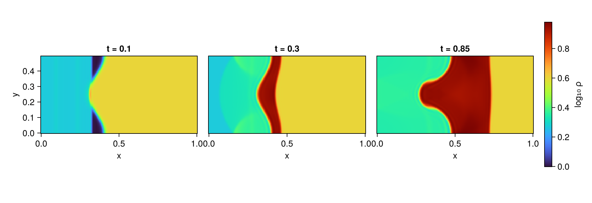
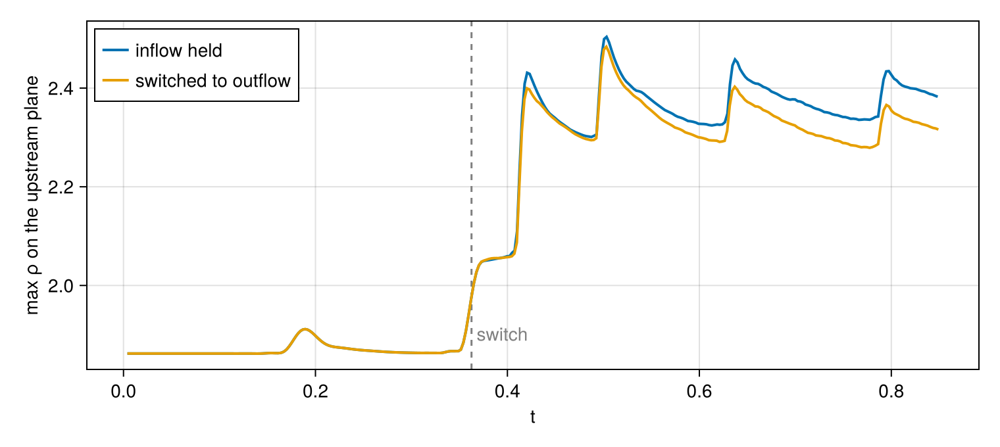
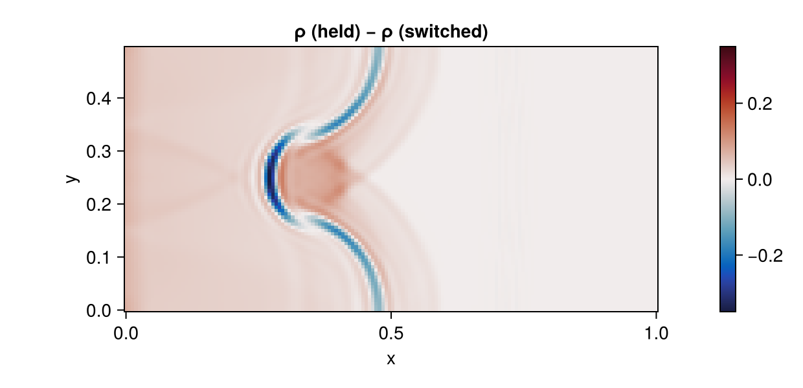

Two-dimensional shock tube with a switchable boundary
This tutorial computes the interaction of a planar shock with a perturbed interface separating a light gas from a heavy one — the Richtmyer–Meshkov problem — in a domain whose upstream boundary condition must change type during the calculation.
The requirement arises from the wave structure rather than from the interaction itself. Sustaining the incident shock requires the shocked driven gas to be held at the upstream face, which is a subsonic inflow condition. The interaction, however, emits a reflected wave that propagates back toward that face. An inflow condition continues to impose the pre-interaction state and therefore does not transmit the reflected wave out of the domain; the wave is returned to the interface, and the second interaction that follows is an artifact of the truncated domain rather than a feature of the physical problem. The boundary must cease to impose a state and begin to absorb one at the time the reflected wave arrives.
SwitchableBC provides that change of condition and WhenState supplies the criterion. The sections below construct the case, record the instant at which the switch occurs, and compare the result against an otherwise identical calculation in which the inflow condition is retained throughout.
using MPI
MPI.Initialized() || MPI.Init(threadlevel=:funneled)
using CompactLES
using CairoMakie
CairoMakie.activate!(type = "png")Gas properties and the incident shock
Two ideal gases share a ratio of specific heats and differ only in gas constant, so that at equal pressure and temperature their density ratio is RL / RH. The value 4 adopted here corresponds to an Atwood number of 0.6.
γ, RL, RH = 1.4, 1.0, 0.25
eos = IdealMixture([IdealSpecies{Float64}("light", RL, γ),
IdealSpecies{Float64}("heavy", RH, γ)])IdealMixture{Float64}(IdealSpecies{Float64}[IdealSpecies{Float64}("light", 1.0, 1.4), IdealSpecies{Float64}("heavy", 0.25, 1.4)], [1.0, 0.25], [2.5000000000000004, 0.6250000000000001], [3.5000000000000004, 0.8750000000000001])The calculation begins with the incident shock already formed rather than with a diaphragm rupture. State 1 denotes the undisturbed driven gas and state 2 the region behind a shock of Mach number MS advancing into it, obtained from the normal-shock relations. Initializing state 2 directly places the shock–interface interaction at the beginning of the calculation.
MS = 1.5
p1 = ρ1 = T1 = 1.0
c1 = sqrt(γ * p1 / ρ1)
p2 = p1 * (2γ * MS^2 - (γ - 1)) / (γ + 1)
ρ2 = ρ1 * ((γ + 1) * MS^2) / ((γ - 1) * MS^2 + 2)
u2 = c1 * 2 / (γ + 1) * (MS^2 - 1) / MS
T2 = p2 / (ρ2 * RL)
(; p2, ρ2, u2, T2)(p2 = 2.4583333333333335, ρ2 = 1.8620689655172413, u2 = 0.8216777476527245, T2 = 1.3202160493827162)Frame of reference
A uniform velocity U is added to every region. It is selected so that the interface is nearly stationary after the shock has traversed it, which is the conventional frame for shock–interface calculations: the interface remains within the domain rather than being convected out of it.
The translation also displaces both faces from u = 0. The NSCBC relaxation coefficient contains a factor 1 - M², and the transverse blending is weighted by the local Mach number, so a boundary evaluated at rest is evaluated in a degenerate limit.
U = -0.5
Ma_upstream = (u2 + U) / sqrt(γ * p2 / ρ2)0.23661076374524684Domain and initial condition
The x axis spans the tube, y is periodic and contains a single wavelength of the interface perturbation, and z is collapsed to one point. A dimension with a single global point carries no derivative, halo exchange, or decomposition, which allows the three-dimensional frontend to compute a two-dimensional problem at two-dimensional cost.
nx, ny = 160, 80
Lx, Ly = 1.0, 0.5
hx = Lx / (nx - 1)
x_shock, x_iface, amp = 0.20, 0.40, 0.05
ic = function (x, y, z)
xi = x_iface + amp * cos(2π * y / Ly) # perturbed interface
s = tanh_blend(x, x_shock, 2hx) # 0 shocked, 1 undisturbed
θ = tanh_blend(x, xi, 2hx) # 0 light, 1 heavy
Prim(Y = (1 - θ, θ),
u = ((1 - s) * u2 + U, 0.0, 0.0),
p = (1 - s) * p2 + s * p1,
T_ion = (1 - s) * T2 + s * T1)
end;Boundary conditions
NSCBCInflowBC replaces each incoming characteristic with a relaxation toward a prescribed velocity, temperature, and composition. This is appropriate while the gas at the face remains uniform state 2, and inappropriate once the reflected shock has arrived and the state there has changed.
NSCBCOutflowBC serves as the after condition. Its relaxation parameter sigma is deliberately small. The pressure at this face following passage of the reflected shock forms part of the solution of the interaction and is not known in advance; relaxing strongly toward a prescribed pinf would impose a value known to be incorrect and would displace the driven section with it. A weak relaxation transmits the outgoing wave while leaving the pressure largely unconstrained.
upstream = SwitchableBC(NSCBCInflowBC(u = (u2 + U, 0.0, 0.0), T_ion = T2,
Y = [1.0, 0.0]),
NSCBCOutflowBC(pinf = p2, sigma = 0.05))SwitchableBC{NSCBCInflowBC{Nothing}, NSCBCOutflowBC}(NSCBCInflowBC{Nothing}((0.3216777476527245, 0.0, 0.0), 1.3202160493827162, [1.0, 0.0], 0.28, 0.28, 0.28, 0.28, 0.0, nothing), NSCBCOutflowBC(2.4583333333333335, 0.05, 0.0, -1.0), false)No wave reaches the downstream face during the calculation — the transmitted shock advances only to approximately x = 0.75 — so prescribing the undisturbed heavy state there with a DirichletBC is exact, and confines the discussion to a single boundary.
downstream = DirichletBC((x, y, z, t) -> Prim(Y = (0.0, 1.0), u = (U, 0.0, 0.0),
p = p1, T_ion = T1))
problem(xlo_bc) = Problem(
name = "2-D shock/interface interaction",
eos = eos,
transport = Transport(mu0 = 0.0), # Euler + artificial regularization
domain = ((0.0, Lx), (0.0, Ly), (0.0, hx)),
bcs = ((xlo_bc, downstream),
(PeriodicBC(), PeriodicBC()),
(PeriodicBC(), PeriodicBC())),
ic = ic,
)
numerics = Numerics(n_global = (nx, ny, 1), art = ArtParams(enabled = true),
cfl = 0.4, filter_interval = 1)
solver, Q = setup(problem(upstream), numerics)(Solver{Float64, NavierStokes1T, IdealMixture{Float64}, CartesianMetric, Tuple{Nothing, Nothing, Nothing}, Tuple{Nothing, Nothing, Nothing}, Tuple{Tuple{SwitchableBC{NSCBCInflowBC{Nothing}, NSCBCOutflowBC}, DirichletBC{Main.var"#5#6"}}, Tuple{PeriodicBC, PeriodicBC}, Tuple{PeriodicBC, PeriodicBC}}, Tuple{DirPlan{Float64}, DirPlan{Float64}, Nothing}, Tuple{DirPlan{Float64}, DirPlan{Float64}, Nothing}, Tuple{}}(Decomp(MPI.Comm(-2080374780), (1, 1, 1), (0, 0, 0), (false, true, true), (160, 80, 1), (160, 80, 1), (0, 0, 0), 4, (true, true, false), (4, 4, 0), ((-1, -1), (0, 0), (0, 0)), (MPI.Comm(-2080374779), MPI.Comm(-2080374778), MPI.Comm(-2080374777)), (0, 0, 0), (1, 1, 1), [[0.0, 0.0, 0.0, 0.0, 0.0, 0.0, 0.0, 0.0, 0.0, 0.0 … 0.0, 0.0, 0.0, 0.0, 0.0, 0.0, 0.0, 0.0, 0.0, 0.0], [0.0, 0.0, 0.0, 0.0, 0.0, 0.0, 0.0, 0.0, 0.0, 0.0 … 0.0, 0.0, 0.0, 0.0, 0.0, 0.0, 0.0, 0.0, 0.0, 0.0], Float64[]], [[0.0, 0.0, 0.0, 0.0, 0.0, 0.0, 0.0, 0.0, 0.0, 0.0 … 0.0, 0.0, 0.0, 0.0, 0.0, 0.0, 0.0, 0.0, 0.0, 0.0], [0.0, 0.0, 0.0, 0.0, 0.0, 0.0, 0.0, 0.0, 0.0, 0.0 … 0.0, 0.0, 0.0, 0.0, 0.0, 0.0, 0.0, 0.0, 0.0, 0.0], Float64[]]), NavierStokes1T(2, 6, (3, 4, 5), 6, ["rho_light", "rho_heavy", "rho_u1", "rho_u2", "rho_u3", "rho_E"]), IdealMixture{Float64}(IdealSpecies{Float64}[IdealSpecies{Float64}("light", 1.0, 1.4), IdealSpecies{Float64}("heavy", 0.25, 1.4)], [1.0, 0.25], [2.5000000000000004, 0.6250000000000001], [3.5000000000000004, 0.8750000000000001]), Transport{Float64}(0.0, 0.7, 0.7), ArtParams{Float64}(true, 0.002, 1.0, 0.01, 0.01), CartesianMetric(), (nothing, nothing, nothing), (nothing, nothing, nothing), (), (1.0, 0.5, 0.006289308176100629), (0.0, 0.0, 0.0), (0.0, 0.0, 0.0), (0.006289308176100629, 0.00625, 1.0), ((SwitchableBC{NSCBCInflowBC{Nothing}, NSCBCOutflowBC}(NSCBCInflowBC{Nothing}((0.3216777476527245, 0.0, 0.0), 1.3202160493827162, [1.0, 0.0], 0.28, 0.28, 0.28, 0.28, 0.0, nothing), NSCBCOutflowBC(2.4583333333333335, 0.05, 0.0, -1.0), false), DirichletBC{Main.var"#5#6"}(Main.var"#5#6"())), (PeriodicBC(), PeriodicBC()), (PeriodicBC(), PeriodicBC())), (DirPlan{Float64}(1, 160, 80, false, CompactScheme{Float64}("Lele C6 first derivative", 0.3333333333333333, 0.0, [0.7777777777777778, 0.027777777777777776], false, ClosureRow{Float64}[ClosureRow{Float64}((0.0, 1.0, 2.0), [-2.5, 2.0, 0.5]), ClosureRow{Float64}((0.25, 1.0, 0.25), [-0.75, 0.0, 0.75])]), CompactLES.LineSolver{Float64}(160, CompactLES.TriFactor{Float64}(160, [0.0, 0.25, 0.6666666666666666, 0.39999999999999997, 0.3846153846153846, 0.38235294117647056, 0.3820224719101123, 0.38197424892703863, 0.38196721311475407, 0.38196618659987475 … 0.38196601125010515, 0.38196601125010515, 0.38196601125010515, 0.38196601125010515, 0.38196601125010515, 0.38196601125010515, 0.38196601125010515, 0.38196601125010515, 0.2864745084375789, 2.211145618000168], [1.0, 2.0, 1.2, 1.1538461538461537, 1.1470588235294117, 1.146067415730337, 1.145922746781116, 1.1459016393442623, 1.1458985597996243, 1.1458981104998804 … 1.1458980337503155, 1.1458980337503155, 1.1458980337503155, 1.1458980337503155, 1.1458980337503155, 1.1458980337503155, 1.1458980337503155, 1.1458980337503155, 1.105572809000084, 2.2360679774997894], [2.0, 0.25, 0.3333333333333333, 0.3333333333333333, 0.3333333333333333, 0.3333333333333333, 0.3333333333333333, 0.3333333333333333, 0.3333333333333333, 0.3333333333333333 … 0.3333333333333333, 0.3333333333333333, 0.3333333333333333, 0.3333333333333333, 0.3333333333333333, 0.3333333333333333, 0.3333333333333333, 0.3333333333333333, 0.25, 0.0]), [0.0, 0.0, 0.0, 0.0, 0.0, 0.0, 0.0, 0.0, 0.0, 0.0 … 0.0, 0.0, 0.0, 0.0, 0.0, 0.0, 0.0, 0.0, 0.0, 0.0], [0.0, 0.0, 0.0, 0.0, 0.0, 0.0, 0.0, 0.0, 0.0, 0.0 … 0.0, 0.0, 0.0, 0.0, 0.0, 0.0, 0.0, 0.0, 0.0, 0.0], false, nothing, MPI.Comm(-2080374779), 1, 0, 80, [0.0 0.0 … 0.0 0.0; 0.0 0.0 … 0.0 0.0], [0.0 0.0 … 0.0 0.0; 0.0 0.0 … 0.0 0.0;;;], [0.0 0.0 … 0.0 0.0; 0.0 0.0 … 0.0 0.0], [0.0, 0.0, 0.0, 0.0, 0.0, 0.0, 0.0, 0.0, 0.0, 0.0 … 0.0, 0.0, 0.0, 0.0, 0.0, 0.0, 0.0, 0.0, 0.0, 0.0], [0.0, 0.0, 0.0, 0.0, 0.0, 0.0, 0.0, 0.0, 0.0, 0.0 … 0.0, 0.0, 0.0, 0.0, 0.0, 0.0, 0.0, 0.0, 0.0, 0.0]), true, true, 0.0, [123.66666666666667, 4.416666666666666], [[-397.5, 318.0, 79.5], [-119.25, 0.0, 119.25]], [[397.5, -318.0, -79.5], [119.25, -0.0, -119.25]], [0.0 0.0 … 0.0 0.0; 0.0 0.0 … 0.0 0.0; … ; 0.0 0.0 … 0.0 0.0; 0.0 0.0 … 0.0 0.0]), DirPlan{Float64}(2, 80, 160, true, CompactScheme{Float64}("Lele C6 first derivative", 0.3333333333333333, 0.0, [0.7777777777777778, 0.027777777777777776], false, ClosureRow{Float64}[ClosureRow{Float64}((0.0, 1.0, 2.0), [-2.5, 2.0, 0.5]), ClosureRow{Float64}((0.25, 1.0, 0.25), [-0.75, 0.0, 0.75])]), CompactLES.LineSolver{Float64}(80, CompactLES.TriFactor{Float64}(80, [0.0, 0.3333333333333333, 0.375, 0.38095238095238093, 0.38181818181818183, 0.3819444444444444, 0.38196286472148533, 0.3819655521783181, 0.3819659442724458, 0.3819660014781966 … 0.3819660112501051, 0.3819660112501051, 0.3819660112501051, 0.3819660112501051, 0.3819660112501051, 0.3819660112501051, 0.3819660112501051, 0.3819660112501051, 0.3819660112501051, 0.3819660112501051], [1.0, 1.125, 1.1428571428571428, 1.1454545454545455, 1.1458333333333333, 1.145888594164456, 1.1458966565349544, 1.1458978328173375, 1.14589800443459, 1.1458980294732088 … 1.1458980337503153, 1.1458980337503153, 1.1458980337503153, 1.1458980337503153, 1.1458980337503153, 1.1458980337503153, 1.1458980337503153, 1.1458980337503153, 1.1458980337503153, 1.1458980337503153], [0.3333333333333333, 0.3333333333333333, 0.3333333333333333, 0.3333333333333333, 0.3333333333333333, 0.3333333333333333, 0.3333333333333333, 0.3333333333333333, 0.3333333333333333, 0.3333333333333333 … 0.3333333333333333, 0.3333333333333333, 0.3333333333333333, 0.3333333333333333, 0.3333333333333333, 0.3333333333333333, 0.3333333333333333, 0.3333333333333333, 0.3333333333333333, 0.3333333333333333]), [0.38196601125010515, -0.14589803375031546, 0.0557280900008412, -0.02128623625220819, 0.008130618755783348, -0.0031056200151418577, 0.0011862412896422266, -0.000453103853784822, 0.0001730702717122393, -6.610696135189596e-5 … 2.107439338790443e-30, -8.049701775956399e-31, 3.07471193996477e-31, -1.1744340439379108e-31, 4.4859019184896316e-32, -1.7133653160897897e-32, 6.541940297797378e-33, -2.4921677324942387e-33, 9.345628996853395e-34, -3.115209665617798e-34], [-3.1152096656177885e-34, 9.345628996853366e-34, -2.4921677324942308e-33, 6.541940297797357e-33, -1.713365316089784e-32, 4.485901918489617e-32, -1.1744340439379069e-31, 3.074711939964759e-31, -8.04970177595637e-31, 2.107439338790435e-30 … -6.610696135189584e-5, 0.00017307027171223905, -0.00045310385378482144, 0.0011862412896422253, -0.003105620015141855, 0.008130618755783341, -0.02128623625220817, 0.05572809000084118, -0.1458980337503154, 0.3819660112501051], true, LinearAlgebra.LU{Float64, Matrix{Float64}, Vector{Int64}}([1.0 0.38196601125010515; 0.3819660112501051 0.8541019662496846], [1, 2], 0), MPI.Comm(-2080374778), 1, 0, 160, [0.0 0.0 … 0.0 0.0; 0.0 0.0 … 0.0 0.0], [0.0 0.0 … 0.0 0.0; 0.0 0.0 … 0.0 0.0;;;], [0.0 0.0 … 0.0 0.0; 0.0 0.0 … 0.0 0.0], [0.0, 0.0, 0.0, 0.0, 0.0, 0.0, 0.0, 0.0, 0.0, 0.0 … 0.0, 0.0, 0.0, 0.0, 0.0, 0.0, 0.0, 0.0, 0.0, 0.0], [0.0, 0.0, 0.0, 0.0, 0.0, 0.0, 0.0, 0.0, 0.0, 0.0 … 0.0, 0.0, 0.0, 0.0, 0.0, 0.0, 0.0, 0.0, 0.0, 0.0]), false, false, 0.0, [124.44444444444444, 4.444444444444445], [[-400.0, 320.0, 80.0], [-120.0, 0.0, 120.0]], [[400.0, -320.0, -80.0], [120.0, -0.0, -120.0]], [0.0 0.0 … 0.0 0.0; 0.0 0.0 … 0.0 0.0; … ; 0.0 0.0 … 0.0 0.0; 0.0 0.0 … 0.0 0.0]), nothing), (DirPlan{Float64}(1, 160, 80, false, CompactScheme{Float64}("Gaitonde–Visbal C8 filter", 0.45, 0.97265625, [0.471875, -0.010937500000000003, 0.0031249999999999993, -0.0003906249999999999], true, ClosureRow{Float64}[ClosureRow{Float64}((0.0, 1.0, 0.0), [1.0]), ClosureRow{Float64}((0.45, 1.0, 0.45), [0.475, 0.95, 0.475]), ClosureRow{Float64}((0.45, 1.0, 0.45), [-0.006249999999999999, 0.475, 0.9625, 0.475, -0.006249999999999999]), ClosureRow{Float64}((0.45, 1.0, 0.45), [0.0015624999999999997, -0.009374999999999994, 0.4734375, 0.96875, 0.4734375, -0.009374999999999994, 0.0015624999999999997])]), CompactLES.LineSolver{Float64}(160, CompactLES.TriFactor{Float64}(160, [0.0, 0.45, 0.45, 0.5642633228840126, 0.6031512605042018, 0.6176381540058536, 0.6232144639897771, 0.625387834956728, 0.6262390188831382, 0.6265730102345815 … 0.6267890062732583, 0.6267890062732583, 0.6267890062732583, 0.6267890062732583, 0.6267890062732583, 0.6267890062732583, 0.6267890062732583, 0.6267890062732583, 0.6267890062732583, 0.0], [1.0, 1.0, 1.2539184952978057, 1.3403361344537816, 1.372529231124119, 1.3849210310883935, 1.3897507443482844, 1.3916422641847515, 1.3923844671879588, 1.3926759124294512 … 1.3928644583850185, 1.3928644583850185, 1.3928644583850185, 1.3928644583850185, 1.3928644583850185, 1.3928644583850185, 1.3928644583850185, 1.3928644583850185, 1.3928644583850185, 1.0], [0.0, 0.45, 0.45, 0.45, 0.45, 0.45, 0.45, 0.45, 0.45, 0.45 … 0.45, 0.45, 0.45, 0.45, 0.45, 0.45, 0.45, 0.45, 0.45, 0.0]), [0.0, 0.0, 0.0, 0.0, 0.0, 0.0, 0.0, 0.0, 0.0, 0.0 … 0.0, 0.0, 0.0, 0.0, 0.0, 0.0, 0.0, 0.0, 0.0, 0.0], [0.0, 0.0, 0.0, 0.0, 0.0, 0.0, 0.0, 0.0, 0.0, 0.0 … 0.0, 0.0, 0.0, 0.0, 0.0, 0.0, 0.0, 0.0, 0.0, 0.0], false, nothing, MPI.Comm(-2080374779), 1, 0, 80, [0.0 0.0 … 0.0 0.0; 0.0 0.0 … 0.0 0.0], [0.0 0.0 … 0.0 0.0; 0.0 0.0 … 0.0 0.0;;;], [0.0 0.0 … 0.0 0.0; 0.0 0.0 … 0.0 0.0], [0.0, 0.0, 0.0, 0.0, 0.0, 0.0, 0.0, 0.0, 0.0, 0.0 … 0.0, 0.0, 0.0, 0.0, 0.0, 0.0, 0.0, 0.0, 0.0, 0.0], [0.0, 0.0, 0.0, 0.0, 0.0, 0.0, 0.0, 0.0, 0.0, 0.0 … 0.0, 0.0, 0.0, 0.0, 0.0, 0.0, 0.0, 0.0, 0.0, 0.0]), true, true, 0.97265625, [0.471875, -0.010937500000000003, 0.0031249999999999993, -0.0003906249999999999], [[1.0], [0.475, 0.95, 0.475], [-0.006249999999999999, 0.475, 0.9625, 0.475, -0.006249999999999999], [0.0015624999999999997, -0.009374999999999994, 0.4734375, 0.96875, 0.4734375, -0.009374999999999994, 0.0015624999999999997]], [[1.0], [0.475, 0.95, 0.475], [-0.006249999999999999, 0.475, 0.9625, 0.475, -0.006249999999999999], [0.0015624999999999997, -0.009374999999999994, 0.4734375, 0.96875, 0.4734375, -0.009374999999999994, 0.0015624999999999997]], [0.0 0.0 … 0.0 0.0; 0.0 0.0 … 0.0 0.0; … ; 0.0 0.0 … 0.0 0.0; 0.0 0.0 … 0.0 0.0]), DirPlan{Float64}(2, 80, 160, true, CompactScheme{Float64}("Gaitonde–Visbal C8 filter", 0.45, 0.97265625, [0.471875, -0.010937500000000003, 0.0031249999999999993, -0.0003906249999999999], true, ClosureRow{Float64}[ClosureRow{Float64}((0.0, 1.0, 0.0), [1.0]), ClosureRow{Float64}((0.45, 1.0, 0.45), [0.475, 0.95, 0.475]), ClosureRow{Float64}((0.45, 1.0, 0.45), [-0.006249999999999999, 0.475, 0.9625, 0.475, -0.006249999999999999]), ClosureRow{Float64}((0.45, 1.0, 0.45), [0.0015624999999999997, -0.009374999999999994, 0.4734375, 0.96875, 0.4734375, -0.009374999999999994, 0.0015624999999999997])]), CompactLES.LineSolver{Float64}(80, CompactLES.TriFactor{Float64}(80, [0.0, 0.45, 0.5642633228840126, 0.6031512605042018, 0.6176381540058536, 0.6232144639897771, 0.625387834956728, 0.6262390188831382, 0.6265730102345815, 0.6267041605932531 … 0.6267890062732583, 0.6267890062732583, 0.6267890062732583, 0.6267890062732583, 0.6267890062732583, 0.6267890062732583, 0.6267890062732583, 0.6267890062732583, 0.6267890062732583, 0.6267890062732583], [1.0, 1.2539184952978057, 1.3403361344537816, 1.372529231124119, 1.3849210310883935, 1.3897507443482844, 1.3916422641847515, 1.3923844671879588, 1.3926759124294512, 1.392790389319322 … 1.3928644583850185, 1.3928644583850185, 1.3928644583850185, 1.3928644583850185, 1.3928644583850185, 1.3928644583850185, 1.3928644583850185, 1.3928644583850185, 1.3928644583850185, 1.3928644583850185], [0.45, 0.45, 0.45, 0.45, 0.45, 0.45, 0.45, 0.45, 0.45, 0.45 … 0.45, 0.45, 0.45, 0.45, 0.45, 0.45, 0.45, 0.45, 0.45, 0.45]), [0.6267890062732586, -0.39286445838501904, 0.24624312347122806, -0.15434248266215436, 0.09674017133355937, -0.06063567585686646, 0.03800577501503275, -0.023821601954317415, 0.014931118216783727, -0.00935866074964642 … 3.940753431164375e-15, -2.46968657118285e-15, 1.5474389492419594e-15, -9.690666493548384e-16, 6.060424937687928e-16, -3.7769444790914583e-16, 2.3327850158486474e-16, -1.4070222227944254e-16, 7.939310348056318e-17, -3.572689656625342e-17], [-3.5726896566253525e-17, 7.939310348056339e-17, -1.407022222794429e-16, 2.3327850158486523e-16, -3.7769444790914637e-16, 6.060424937687934e-16, -9.690666493548388e-16, 1.5474389492419592e-15, -2.4696865711828483e-15, 3.94075343116437e-15 … -0.009358660749646381, 0.01493111821678367, -0.02382160195431733, 0.038005775015032627, -0.06063567585686629, 0.09674017133355915, -0.15434248266215406, 0.24624312347122768, -0.39286445838501866, 0.6267890062732583], true, LinearAlgebra.LU{Float64, Matrix{Float64}, Vector{Int64}}([1.0 0.6267890062732586; 0.6267890062732583 0.6071355416149812], [1, 2], 0), MPI.Comm(-2080374778), 1, 0, 160, [0.0 0.0 … 0.0 0.0; 0.0 0.0 … 0.0 0.0], [0.0 0.0 … 0.0 0.0; 0.0 0.0 … 0.0 0.0;;;], [0.0 0.0 … 0.0 0.0; 0.0 0.0 … 0.0 0.0], [0.0, 0.0, 0.0, 0.0, 0.0, 0.0, 0.0, 0.0, 0.0, 0.0 … 0.0, 0.0, 0.0, 0.0, 0.0, 0.0, 0.0, 0.0, 0.0, 0.0], [0.0, 0.0, 0.0, 0.0, 0.0, 0.0, 0.0, 0.0, 0.0, 0.0 … 0.0, 0.0, 0.0, 0.0, 0.0, 0.0, 0.0, 0.0, 0.0, 0.0]), false, false, 0.97265625, [0.471875, -0.010937500000000003, 0.0031249999999999993, -0.0003906249999999999], [[1.0], [0.475, 0.95, 0.475], [-0.006249999999999999, 0.475, 0.9625, 0.475, -0.006249999999999999], [0.0015624999999999997, -0.009374999999999994, 0.4734375, 0.96875, 0.4734375, -0.009374999999999994, 0.0015624999999999997]], [[1.0], [0.475, 0.95, 0.475], [-0.006249999999999999, 0.475, 0.9625, 0.475, -0.006249999999999999], [0.0015624999999999997, -0.009374999999999994, 0.4734375, 0.96875, 0.4734375, -0.009374999999999994, 0.0015624999999999997]], [0.0 0.0 … 0.0 0.0; 0.0 0.0 … 0.0 0.0; … ; 0.0 0.0 … 0.0 0.0; 0.0 0.0 … 0.0 0.0]), nothing), Array{Float64, 3}(undef, 0, 0, 0), Array{Float64, 3}(undef, 0, 0, 0), 0.4, 1, StepControl(0.0, 0.0, 0.0, 1.0e-8, 0, 0.5, 25), [0.0 0.0 … 0.0 0.0; 0.0 0.0 … 0.0 0.0; … ; 0.0 0.0 … 0.0 0.0; 0.0 0.0 … 0.0 0.0;;;], [0.0 0.0 … 0.0 0.0; 0.0 0.0 … 0.0 0.0; … ; 0.0 0.0 … 0.0 0.0; 0.0 0.0 … 0.0 0.0;;;], [0.0 0.0 … 0.0 0.0; 0.0 0.0 … 0.0 0.0; … ; 0.0 0.0 … 0.0 0.0; 0.0 0.0 … 0.0 0.0;;;], [0.0 0.0 … 0.0 0.0; 0.0 0.0 … 0.0 0.0; … ; 0.0 0.0 … 0.0 0.0; 0.0 0.0 … 0.0 0.0;;;], [0.0 0.0 … 0.0 0.0; 0.0 0.0 … 0.0 0.0; … ; 0.0 0.0 … 0.0 0.0; 0.0 0.0 … 0.0 0.0;;;], [0.0 0.0 … 0.0 0.0; 0.0 0.0 … 0.0 0.0; … ; 0.0 0.0 … 0.0 0.0; 0.0 0.0 … 0.0 0.0;;;], [0.0 0.0 … 0.0 0.0; 0.0 0.0 … 0.0 0.0; … ; 0.0 0.0 … 0.0 0.0; 0.0 0.0 … 0.0 0.0;;;], [0.0 0.0 … 0.0 0.0; 0.0 0.0 … 0.0 0.0; … ; 0.0 0.0 … 0.0 0.0; 0.0 0.0 … 0.0 0.0;;;], [[0.0 0.0 … 0.0 0.0; 0.0 0.0 … 0.0 0.0; … ; 0.0 0.0 … 0.0 0.0; 0.0 0.0 … 0.0 0.0;;;], [0.0 0.0 … 0.0 0.0; 0.0 0.0 … 0.0 0.0; … ; 0.0 0.0 … 0.0 0.0; 0.0 0.0 … 0.0 0.0;;;]], [[0.0 0.0 … 0.0 0.0; 0.0 0.0 … 0.0 0.0; … ; 0.0 0.0 … 0.0 0.0; 0.0 0.0 … 0.0 0.0;;;] [0.0 0.0 … 0.0 0.0; 0.0 0.0 … 0.0 0.0; … ; 0.0 0.0 … 0.0 0.0; 0.0 0.0 … 0.0 0.0;;;] [0.0 0.0 … 0.0 0.0; 0.0 0.0 … 0.0 0.0; … ; 0.0 0.0 … 0.0 0.0; 0.0 0.0 … 0.0 0.0;;;]; [0.0 0.0 … 0.0 0.0; 0.0 0.0 … 0.0 0.0; … ; 0.0 0.0 … 0.0 0.0; 0.0 0.0 … 0.0 0.0;;;] [0.0 0.0 … 0.0 0.0; 0.0 0.0 … 0.0 0.0; … ; 0.0 0.0 … 0.0 0.0; 0.0 0.0 … 0.0 0.0;;;] [0.0 0.0 … 0.0 0.0; 0.0 0.0 … 0.0 0.0; … ; 0.0 0.0 … 0.0 0.0; 0.0 0.0 … 0.0 0.0;;;]; [0.0 0.0 … 0.0 0.0; 0.0 0.0 … 0.0 0.0; … ; 0.0 0.0 … 0.0 0.0; 0.0 0.0 … 0.0 0.0;;;] [0.0 0.0 … 0.0 0.0; 0.0 0.0 … 0.0 0.0; … ; 0.0 0.0 … 0.0 0.0; 0.0 0.0 … 0.0 0.0;;;] [0.0 0.0 … 0.0 0.0; 0.0 0.0 … 0.0 0.0; … ; 0.0 0.0 … 0.0 0.0; 0.0 0.0 … 0.0 0.0;;;]], ([0.0 0.0 … 0.0 0.0; 0.0 0.0 … 0.0 0.0; … ; 0.0 0.0 … 0.0 0.0; 0.0 0.0 … 0.0 0.0;;;], [0.0 0.0 … 0.0 0.0; 0.0 0.0 … 0.0 0.0; … ; 0.0 0.0 … 0.0 0.0; 0.0 0.0 … 0.0 0.0;;;], [0.0 0.0 … 0.0 0.0; 0.0 0.0 … 0.0 0.0; … ; 0.0 0.0 … 0.0 0.0; 0.0 0.0 … 0.0 0.0;;;]), [[0.0 0.0 … 0.0 0.0; 0.0 0.0 … 0.0 0.0; … ; 0.0 0.0 … 0.0 0.0; 0.0 0.0 … 0.0 0.0;;;] [0.0 0.0 … 0.0 0.0; 0.0 0.0 … 0.0 0.0; … ; 0.0 0.0 … 0.0 0.0; 0.0 0.0 … 0.0 0.0;;;]; [0.0 0.0 … 0.0 0.0; 0.0 0.0 … 0.0 0.0; … ; 0.0 0.0 … 0.0 0.0; 0.0 0.0 … 0.0 0.0;;;] [0.0 0.0 … 0.0 0.0; 0.0 0.0 … 0.0 0.0; … ; 0.0 0.0 … 0.0 0.0; 0.0 0.0 … 0.0 0.0;;;]; [0.0 0.0 … 0.0 0.0; 0.0 0.0 … 0.0 0.0; … ; 0.0 0.0 … 0.0 0.0; 0.0 0.0 … 0.0 0.0;;;] [0.0 0.0 … 0.0 0.0; 0.0 0.0 … 0.0 0.0; … ; 0.0 0.0 … 0.0 0.0; 0.0 0.0 … 0.0 0.0;;;]], [0.0 0.0 … 0.0 0.0; 0.0 0.0 … 0.0 0.0; … ; 0.0 0.0 … 0.0 0.0; 0.0 0.0 … 0.0 0.0;;;], [0.0 0.0 … 0.0 0.0; 0.0 0.0 … 0.0 0.0; … ; 0.0 0.0 … 0.0 0.0; 0.0 0.0 … 0.0 0.0;;;], [0.0 0.0 … 0.0 0.0; 0.0 0.0 … 0.0 0.0; … ; 0.0 0.0 … 0.0 0.0; 0.0 0.0 … 0.0 0.0;;;], [[0.0 0.0 … 0.0 0.0; 0.0 0.0 … 0.0 0.0; … ; 0.0 0.0 … 0.0 0.0; 0.0 0.0 … 0.0 0.0;;;], [0.0 0.0 … 0.0 0.0; 0.0 0.0 … 0.0 0.0; … ; 0.0 0.0 … 0.0 0.0; 0.0 0.0 … 0.0 0.0;;;]], [0.0 0.0 … 0.0 0.0; 0.0 0.0 … 0.0 0.0; … ; 0.0 0.0 … 0.0 0.0; 0.0 0.0 … 0.0 0.0;;;], [0.0 0.0 … 0.0 0.0; 0.0 0.0 … 0.0 0.0; … ; 0.0 0.0 … 0.0 0.0; 0.0 0.0 … 0.0 0.0;;;], [0.0 0.0 … 0.0 0.0; 0.0 0.0 … 0.0 0.0; … ; 0.0 0.0 … 0.0 0.0; 0.0 0.0 … 0.0 0.0;;;], [0.0 0.0 … 0.0 0.0; 0.0 0.0 … 0.0 0.0; … ; 0.0 0.0 … 0.0 0.0; 0.0 0.0 … 0.0 0.0;;;], [0.0 0.0 … 0.0 0.0; 0.0 0.0 … 0.0 0.0; … ; 0.0 0.0 … 0.0 0.0; 0.0 0.0 … 0.0 0.0;;;], [1.0 1.0 … 1.0 1.0; 1.0 1.0 … 1.0 1.0; … ; 1.0 1.0 … 1.0 1.0; 1.0 1.0 … 1.0 1.0;;;], ([1.0 1.0 … 1.0 1.0; 1.0 1.0 … 1.0 1.0; … ; 1.0 1.0 … 1.0 1.0; 1.0 1.0 … 1.0 1.0;;;], [1.0 1.0 … 1.0 1.0; 1.0 1.0 … 1.0 1.0; … ; 1.0 1.0 … 1.0 1.0; 1.0 1.0 … 1.0 1.0;;;], [1.0 1.0 … 1.0 1.0; 1.0 1.0 … 1.0 1.0; … ; 1.0 1.0 … 1.0 1.0; 1.0 1.0 … 1.0 1.0;;;]), ([1.0 1.0 … 1.0 1.0; 1.0 1.0 … 1.0 1.0; … ; 1.0 1.0 … 1.0 1.0; 1.0 1.0 … 1.0 1.0;;;], [1.0 1.0 … 1.0 1.0; 1.0 1.0 … 1.0 1.0; … ; 1.0 1.0 … 1.0 1.0; 1.0 1.0 … 1.0 1.0;;;], [1.0 1.0 … 1.0 1.0; 1.0 1.0 … 1.0 1.0; … ; 1.0 1.0 … 1.0 1.0; 1.0 1.0 … 1.0 1.0;;;]), [0.0 0.0 … 0.0 0.0; 0.0 0.0 … 0.0 0.0; … ; 0.0 0.0 … 0.0 0.0; 0.0 0.0 … 0.0 0.0;;;], [0.0 0.0 … 0.0 0.0; 0.0 0.0 … 0.0 0.0; … ; 0.0 0.0 … 0.0 0.0; 0.0 0.0 … 0.0 0.0;;;], [[0.0 0.0 … 0.0 0.0; 0.0 0.0 … 0.0 0.0; … ; 0.0 0.0 … 0.0 0.0; 0.0 0.0 … 0.0 0.0;;;] [0.0 0.0 … 0.0 0.0; 0.0 0.0 … 0.0 0.0; … ; 0.0 0.0 … 0.0 0.0; 0.0 0.0 … 0.0 0.0;;;] … [0.0 0.0 … 0.0 0.0; 0.0 0.0 … 0.0 0.0; … ; 0.0 0.0 … 0.0 0.0; 0.0 0.0 … 0.0 0.0;;;] [0.0 0.0 … 0.0 0.0; 0.0 0.0 … 0.0 0.0; … ; 0.0 0.0 … 0.0 0.0; 0.0 0.0 … 0.0 0.0;;;]; [0.0 0.0 … 0.0 0.0; 0.0 0.0 … 0.0 0.0; … ; 0.0 0.0 … 0.0 0.0; 0.0 0.0 … 0.0 0.0;;;] [0.0 0.0 … 0.0 0.0; 0.0 0.0 … 0.0 0.0; … ; 0.0 0.0 … 0.0 0.0; 0.0 0.0 … 0.0 0.0;;;] … [0.0 0.0 … 0.0 0.0; 0.0 0.0 … 0.0 0.0; … ; 0.0 0.0 … 0.0 0.0; 0.0 0.0 … 0.0 0.0;;;] [0.0 0.0 … 0.0 0.0; 0.0 0.0 … 0.0 0.0; … ; 0.0 0.0 … 0.0 0.0; 0.0 0.0 … 0.0 0.0;;;]; [0.0 0.0 … 0.0 0.0; 0.0 0.0 … 0.0 0.0; … ; 0.0 0.0 … 0.0 0.0; 0.0 0.0 … 0.0 0.0;;;] [0.0 0.0 … 0.0 0.0; 0.0 0.0 … 0.0 0.0; … ; 0.0 0.0 … 0.0 0.0; 0.0 0.0 … 0.0 0.0;;;] … [0.0 0.0 … 0.0 0.0; 0.0 0.0 … 0.0 0.0; … ; 0.0 0.0 … 0.0 0.0; 0.0 0.0 … 0.0 0.0;;;] [0.0 0.0 … 0.0 0.0; 0.0 0.0 … 0.0 0.0; … ; 0.0 0.0 … 0.0 0.0; 0.0 0.0 … 0.0 0.0;;;]], 0.0, 0.0, 0, 0.0, 0.0, 0.0, 0.0), [0.0 0.0 … 0.0 0.0; 0.0 0.0 … 0.0 0.0; … ; 0.0 0.0 … 0.0 0.0; 0.0 0.0 … 0.0 0.0;;;; 0.0 0.0 … 0.0 0.0; 0.0 0.0 … 0.0 0.0; … ; 0.0 0.0 … 0.0 0.0; 0.0 0.0 … 0.0 0.0;;;; 0.0 0.0 … 0.0 0.0; 0.0 0.0 … 0.0 0.0; … ; 0.0 0.0 … 0.0 0.0; 0.0 0.0 … 0.0 0.0;;;; 0.0 0.0 … 0.0 0.0; 0.0 0.0 … 0.0 0.0; … ; 0.0 0.0 … 0.0 0.0; 0.0 0.0 … 0.0 0.0;;;; 0.0 0.0 … 0.0 0.0; 0.0 0.0 … 0.0 0.0; … ; 0.0 0.0 … 0.0 0.0; 0.0 0.0 … 0.0 0.0;;;; 0.0 0.0 … 0.0 0.0; 0.0 0.0 … 0.0 0.0; … ; 0.0 0.0 … 0.0 0.0; 0.0 0.0 … 0.0 0.0])Field extraction
The mixture density is the sum of the species densities and is available directly from the conserved array, by the same expression in serial and decomposed calculations.
function density(solver, Q)
nxl, nyl, _ = solver.decomp.n_local
[Q[gidx(solver, i, j, 1), 1] + Q[gidx(solver, i, j, 1), 2]
for i in 1:nxl, j in 1:nyl]
end
xs = [xcoord(solver, 1, i) for i in 1:nx]
ys = [xcoord(solver, 2, j) for j in 1:ny];Switching criterion
The reflected shock is taken to have arrived when the density at any point on the upstream plane exceeds that of state 2. CompactLES.wallplane returns that plane, or nothing on a rank that does not own it, so the predicate below yields a rank-local verdict; WhenState reduces it across the communicator before acting on it.
The reduction is required for correctness rather than for convenience. NSCBCOutflowBC performs collective operations that NSCBCInflowBC does not. Were the ranks to disagree as to whether the switch had occurred, some would enter a collective that the others never reach, and the calculation would stall at zero CPU utilization rather than raise an error. A switch must therefore be driven by a Callback, and never from an unreduced rank-local predicate.
The maximum over the plane is used in preference to a centreline value because the perturbed interface renders the reflected shock non-planar: it reaches the boundary beneath the spike before it does beneath the bubble, and arrival is defined here as first contact at any transverse station.
function upstream_density(solver, Q)
plane = CompactLES.wallplane(solver.decomp, 1, 1)
plane === nothing && return -Inf # this rank does not own the face
return maximum(I -> Q[I, 1] + Q[I, 2], plane)
endupstream_density (generic function with 1 method)The threshold must also exceed an unrelated transient. The initial shock is represented by a hyperbolic-tangent profile rather than by an exact discrete shock, and relaxes onto the profile the scheme supports, emitting a small acoustic pulse upstream. That pulse reaches the face at t ≈ 0.19 and raises the density approximately 3% above state 2, whereas the reflected shock raises it by 10% and subsequently by 30%. A threshold of 6% separates them.
reflected_wave_arrived(solver, Q) = upstream_density(solver, Q) > 1.06ρ2reflected_wave_arrived (generic function with 1 method)Time integration
Two callbacks are supplied: the first records the upstream density at regular intervals, so that the switch may be located afterwards, and the second performs the switch and records the time at which it occurs.
tfinal = 0.85
history = (t = Float64[], ρ = Float64[])
switch_time = Ref(NaN)
record! = Callback(EveryStep(5), function (solver, Q)
push!(history.t, solver.t)
push!(history.ρ, upstream_density(solver, Q))
nothing
end)
absorb! = Callback(WhenState(reflected_wave_arrived), function (solver, Q)
switch!(upstream)
switch_time[] = solver.t
nothing
end)Callback{WhenState{typeof(Main.reflected_wave_arrived)}, Main.var"#19#20"}(WhenState{typeof(Main.reflected_wave_arrived)}(Main.reflected_wave_arrived, true, false), Main.var"#19#20"())Fields are stored at prescribed instants using AtTime. run! clips dt so that a step terminates exactly on a scheduled instant rather than overshooting it.
snaps = Pair{Float64,Matrix{Float64}}[]
snapshot! = Callback(AtTime([0.10, 0.30, 0.85]), function (solver, Q)
push!(snaps, solver.t => density(solver, Q))
nothing
end)
run!(solver, Q; tfinal, nmax = 100_000,
callback = (record!, absorb!, snapshot!))
switched(upstream), switch_time[](true, 0.3625969608300427)The switch occurred during the calculation, on the step at which the reflected shock reached the upstream plane.
Evolution of the interaction
Density is presented on a logarithmic scale. The calculation spans densities from 1 in the undisturbed light gas to approximately 9.5 in the shocked heavy gas, and on a linear scale the states below 4 are not distinguishable.
ρlims = log10.(extrema(reduce(vcat, [vec(ρ) for (_, ρ) in snaps])))
fig = Figure(size = (960, 330))
for (n, (t, ρ)) in enumerate(snaps)
ax = Axis(fig[1, n], title = "t = $(round(t, digits=2))",
xlabel = "x", ylabel = n == 1 ? "y" : "", aspect = DataAspect())
heatmap!(ax, xs, ys, log10.(ρ), colormap = :turbo, colorrange = ρlims)
n > 1 && hideydecorations!(ax, grid = false)
end
Colorbar(fig[1, 4], colormap = :turbo, limits = ρlims, label = "log₁₀ ρ")
fig
At t = 0.10 three states are present: the shocked driven gas held at the upstream face (cyan), the undisturbed driven gas ahead of the incident shock (dark), and the heavy gas beyond the perturbed interface (yellow). By t = 0.30 the shock has traversed the interface, depositing baroclinic vorticity that inverts and amplifies the perturbation, driving a transmitted shock into the heavy gas (dark red) and returning a reflected shock upstream, visible as the broad feature propagating leftward through the cyan region. At t = 0.85 the interface exhibits the characteristic Richtmyer–Meshkov spike and bubble, and the transmitted shock has advanced to approximately x = 0.75, short of the downstream face.
Control case: the inflow condition retained
The calculation is repeated with the upstream condition held fixed.
solver_h, Q_h = setup(problem(NSCBCInflowBC(u = (u2 + U, 0.0, 0.0), T_ion = T2,
Y = [1.0, 0.0])), numerics)
history_h = (t = Float64[], ρ = Float64[])
record_h! = Callback(EveryStep(5), function (solver, Q)
push!(history_h.t, solver.t)
push!(history_h.ρ, upstream_density(solver, Q))
nothing
end)
run!(solver_h, Q_h; tfinal, nmax = 100_000, callback = record_h!)
ρ_held = density(solver_h, Q_h);Effect of the switch
The density on the upstream plane is sufficient to characterize the difference. The two calculations employ the same condition until the switch and are therefore identical up to that step, including through the startup transient at t ≈ 0.19, which both treat in the same way. Thereafter the retained inflow condition continues to relax toward state 2, which no longer describes the gas at the face, and the resulting mismatch propagates back into the domain; the switched boundary transmits the wave and settles at a lower level.
fig2 = Figure(size = (760, 340))
ax = Axis(fig2[1, 1], xlabel = "t", ylabel = "max ρ on the upstream plane")
vlines!(ax, switch_time[], color = :gray, linestyle = :dash)
text!(ax, switch_time[], 1.88, text = " switch", align = (:left, :bottom),
color = :gray)
lines!(ax, history_h.t, history_h.ρ, label = "inflow held", linewidth = 2)
lines!(ax, history.t, history.ρ, label = "switched to outflow", linewidth = 2)
axislegend(ax, position = :lt)
fig2
The difference between the two final density fields isolates the spurious reflection: the wave returned by the retained inflow condition, and the position it has reached by the end of the calculation.
fig3 = Figure(size = (620, 300))
ax = Axis(fig3[1, 1], xlabel = "x", ylabel = "y", aspect = DataAspect(),
title = "ρ (held) − ρ (switched)")
Δ = ρ_held .- last(snaps).second
m = maximum(abs, Δ)
heatmap!(ax, xs, ys, Δ, colormap = :balance, colorrange = (-m, m))
Colorbar(fig3[1, 2], colormap = :balance, limits = (-m, m))
fig3
The discrepancy is not confined to the neighbourhood of the upstream boundary. It has traversed the domain and is concentrated at the interface, so an inappropriate boundary condition here contaminates the quantity of interest rather than a boundary layer of cells.
Remarks
- Both conditions in a
SwitchableBCmust agree on periodicity, and neither may be a fold condition (AxisBC,OriginBC,PoleBC);setupidentifies those by type, and a wrapped fold would not be constructed. - Prior to switching, the wrapper is bit-identical to the condition it wraps, so it may be left in a problem specification that never switches.
densityandupstream_densityabove are rank-local. This suffices forWhenState, which reduces the verdict itself, but a diagnostic gathered in this manner is correct only in serial.save_vtkis appropriate for post-processing, as are the collective diagnostics described in Runtime and output, whereplane_profileand related functions reduce across the communicator.- The behaviour illustrated here is verified against a calculation on a domain long enough that the upstream boundary cannot influence the result; see the
SwitchableBCtestsets intest/runtests.jl.
This page was generated using Literate.jl.